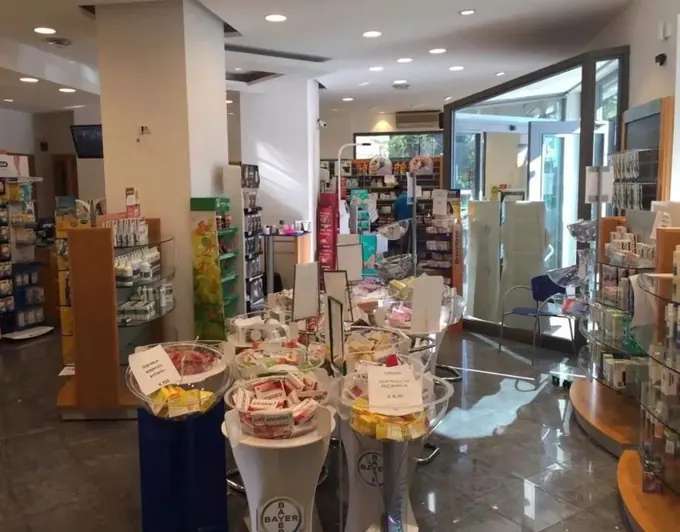
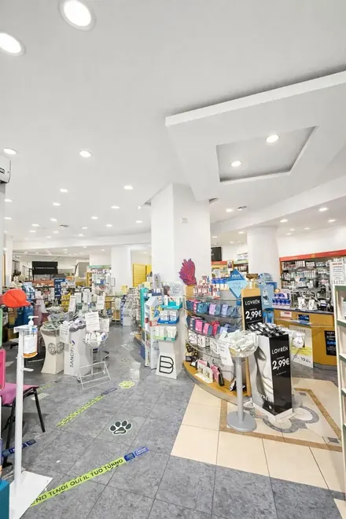
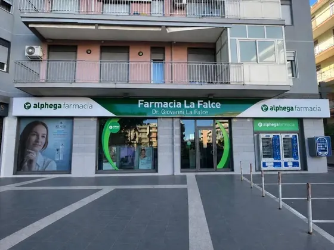

Farmacia La Falce a Gravina di Catania
Consigli, servizi sanitari e assistenza in Via Fasano 112, dal 1996. Chiamaci, scrivici su WhatsApp o per email per sapere se un prodotto è disponibile, per informazioni e consigli, o per chiedere una consegna a domicilio.
Dove Via Fasano 112, Gravina di Catania. Come arrivare
Orari lun-ven 8:30-13:00 e 16:00-20:00, sabato 8:30-13:00
Adesso
Per la tua salute è utile sapere…
Ogni giorno un nuovo articolo della farmacia: prevenzione, consigli pratici e i nostri servizi spiegati da vicino.
- Servizi della farmacia
Holter pressorio: cos'è e come si fa in farmacia
Misura la pressione per 24 ore, anche di notte. Ecco a cosa serve, come si svolge e quanto costa l'Holter pressorio in farmacia.
Holter pressorio e Holter cardiaco con la ricetta del medico
Con la prescrizione del tuo medico (ricetta dematerializzata del Servizio Sanitario Nazionale) puoi fare questi due esami qui in farmacia, vicino a casa.
Se sulla ricetta è indicata un'esenzione per reddito o per patologia, l'esame è gratuito: non paghi nulla.
Senza esenzione l'esame è a pagamento: Holter cardiaco 70 €, Holter pressorio 35 €.
Per fissare il giorno chiamaci al 095 7500061, scrivici su WhatsApp o a farmacialafalcegiovanni@gmail.com: ti diciamo cosa portare e ti confermiamo noi l'appuntamento.
I nostri servizi
Esami, controlli e pratiche sanitarie che puoi fare qui in farmacia. Per informazioni e appuntamenti chiamaci, scrivici su WhatsApp o per email.
Esami del cuore
- Elettrocardiogramma (ECG)Esame rapido e indolore, con referto medico a distanza in telemedicina. Costa 25 €: non è convenzionato con il Servizio Sanitario Nazionale, quindi è sempre a pagamento.
- Holter cardiacoRegistra il battito del cuore mentre fai la tua vita di tutti i giorni. Senza ricetta costa 70 €; con ricetta ed esenzione per reddito o patologia è gratuito.Anche con ricetta del medico
- Holter pressorio 24 oreMisura la pressione a intervalli regolari per un giorno intero, anche durante la notte. Senza ricetta costa 35 €; con ricetta ed esenzione per reddito o patologia è gratuito.Anche con ricetta del medico
Controlli in farmacia
- Misurazione della pressioneUn controllo veloce, con il consiglio del farmacista.
- Densitometria osseaEsame rapido con ultrasuoni al tallone (apparecchio Beetle), senza raggi X. Valuta la salute delle ossa ed è utile per la prevenzione dell'osteoporosi. Costa 15 €.
- Peso, altezza e indice di massa corporeaPer tenere sotto controllo il peso nel tempo.
Pratiche sanitarie e pagamenti
- Scelta e cambio del medico di famigliaPuoi farlo direttamente qui, senza andare agli sportelli dell'ASP. Costa 5 € a persona. Porta la tessera sanitaria, un documento d'identità e il tuo cellulare.
- Prenotazione di visite ed esamiPrenotiamo per te visite specialistiche e accertamenti diagnostici tramite il CUP. Costa 3 €. Porta la ricetta dematerializzata del medico.
- Pagamento ticket, avvisi pagoPA e bollo autoTicket sanitari, bollette TARI, luce, gas e acqua con codice QR pagoPA, multe, mense scolastiche, altri pagamenti pagoPA e bollo auto.Cosa puoi pagare
Altri servizi
- Consegna a domicilioA Gravina di Catania, Catania, Mascalucia, San Giovanni La Punta, Sant'Agata li Battiati, Misterbianco, Tremestieri Etneo e Belpasso, nei giorni di apertura, al costo di 2 €. Chiedila su WhatsApp o per email: di solito, se ci scrivi la mattina consegniamo nel pomeriggio, se ci scrivi il pomeriggio la mattina seguente.
- Preparazioni galenicheMedicinali preparati su ricetta del medico o secondo la Farmacopea Ufficiale, pronti di solito entro 2 giorni lavorativi.
- Angolo veterinariaFarmaci, alimenti, prodotti per l'igiene e integratori per la salute dei tuoi animali.
Paga in farmacia ticket, avvisi pagoPA e bollo auto
Puoi pagare qui i ticket sanitari e gli avvisi pagoPA, cioè i pagamenti verso Comuni, scuole, ASP e altri enti pubblici, e tutte le bollette che riportano il codice QR pagoPA. Puoi pagare anche il bollo auto. Alcuni esempi:
- Ticket sanitari
- Bollette TARI (rifiuti)
- Bollette di luce, gas e acqua con codice QR pagoPA
- Multe
- Mense e rette scolastiche
- Tasse universitarie
- Altri avvisi di Comuni ed enti pubblici
- Bollo auto
Cosa portare
- L'avviso di pagamento con il codice QR, oppure il codice avviso.
- Per il ticket di una visita o di un esame, il foglio della prenotazione.
- Per il bollo auto, la targa del veicolo.
Se hai un dubbio su un pagamento, chiamaci prima di passare.
Dal 1996 al servizio dei nostri clienti
La nostra farmacia è aperta dal 1996 e da allora è attenta alle esigenze dei clienti, quelle di sempre e quelle nuove. Per questo, accanto al consiglio del farmacista, abbiamo portato in farmacia esami, prenotazioni e pagamenti.
Mettiamo la tua salute al primo posto, con assistenza e consigli personalizzati in un ambiente ampio e accogliente. Vieni a trovarci in Via Fasano 112.


Domande frequenti
Posso fare l'Holter con la ricetta del medico?
Sì. L'Holter pressorio e l'Holter cardiaco si fanno in farmacia con la ricetta dematerializzata del tuo medico. Se sulla ricetta è indicata un'esenzione per reddito o per patologia l'esame è gratuito, altrimenti è a pagamento: l'Holter cardiaco costa 70 € e l'Holter pressorio 35 €. Per fissare il giorno chiamaci, scrivici su WhatsApp o per email: l'appuntamento è valido dopo la nostra conferma.
Quanto costa l'elettrocardiogramma?
L'ECG a riposo costa 25 €. Non è convenzionato con il Servizio Sanitario Nazionale, quindi è sempre a pagamento, anche con ricetta o esenzione. Il referto è di un medico a distanza, in telemedicina. Chiamaci o scrivici per il primo giorno disponibile.
Fate consegne a domicilio? Quando arrivano?
Sì, a Gravina di Catania, Catania, Mascalucia, San Giovanni La Punta, Sant'Agata li Battiati, Misterbianco, Tremestieri Etneo e Belpasso, nei giorni di apertura. La consegna costa 2 €. Di solito, se ci scrivi su WhatsApp o per email la mattina consegniamo nel pomeriggio; se ci scrivi il pomeriggio consegniamo la mattina seguente. Ti confermiamo noi disponibilità dei prodotti e orario.
Cosa devo portare per pagare un avviso pagoPA?
L'avviso di pagamento con il codice QR, oppure il codice avviso. Per il ticket di una visita o di un esame basta il foglio della prenotazione. Puoi pagare anche le bollette di luce, gas e acqua, se riportano il codice QR pagoPA.
Posso cambiare il medico di famiglia in farmacia?
Sì, la scelta e il cambio del medico di famiglia si fanno direttamente qui, senza andare agli sportelli dell'ASP. Il servizio costa 5 € a persona. Porta la tessera sanitaria, un documento d'identità e il tuo telefono cellulare.
Scrivici su WhatsApp o per email
Oltre che per telefono, puoi contattarci su WhatsApp e per email per:
- prenotare un esame, come ECG, Holter o densitometria;
- chiedere un farmaco o sapere se un prodotto è disponibile;
- inviarci la ricetta e farci preparare i farmaci: passi a ritirarli oppure te li portiamo a casa;
- chiedere un consiglio o una consegna a domicilio.
Ti rispondiamo appena possibile negli orari di apertura. Appuntamenti e consegne sono confermati da noi.
WhatsApp +39 095 7500061
Consegna a domicilio
Non puoi venire in farmacia? Ti portiamo i prodotti a casa al costo di 2 €. Scrivici su WhatsApp o per email per chiedere la consegna.
Consegniamo a: Gravina di Catania, Catania, Mascalucia, San Giovanni La Punta, Sant'Agata li Battiati, Misterbianco, Tremestieri Etneo e Belpasso.
- Richiesta la mattina: consegna nel pomeriggio.
- Richiesta il pomeriggio: consegna la mattina seguente.
Vale nei giorni di apertura. Ti confermiamo noi disponibilità dei prodotti e orario di consegna.
Orari di apertura
| Lunedì | 8:30-13:00 16:00-20:00 |
|---|---|
| Martedì | 8:30-13:00 16:00-20:00 |
| Mercoledì | 8:30-13:00 16:00-20:00 |
| Giovedì | 8:30-13:00 16:00-20:00 |
| Venerdì | 8:30-13:00 16:00-20:00 |
| Sabato | 8:30-13:00 |
| Domenica | Chiuso |
Nei giorni festivi gli orari possono cambiare.
Quando siamo chiusi: cerca le farmacie di turno
Dove siamo

Via Fasano 11295030 Gravina di Catania (CT)
Telefono 095 7500061
WhatsApp +39 095 7500061
Email farmacialafalcegiovanni@gmail.com
Facebook Seguici per novità e offerte
Scrivici un messaggio
Compila il modulo: il messaggio arriva alla email della farmacia e ti rispondiamo all'indirizzo che ci lasci, il prima possibile. Se preferisci, scrivici direttamente a farmacialafalcegiovanni@gmail.com.
Puoi scriverci per prenotare un esame, chiedere un farmaco, chiedere informazioni e consigli. Per inviarci la ricetta in foto o PDF usa WhatsApp o scrivici a farmacialafalcegiovanni@gmail.com. Nel modulo puoi anche indicare il numero della ricetta elettronica (codice NRE).